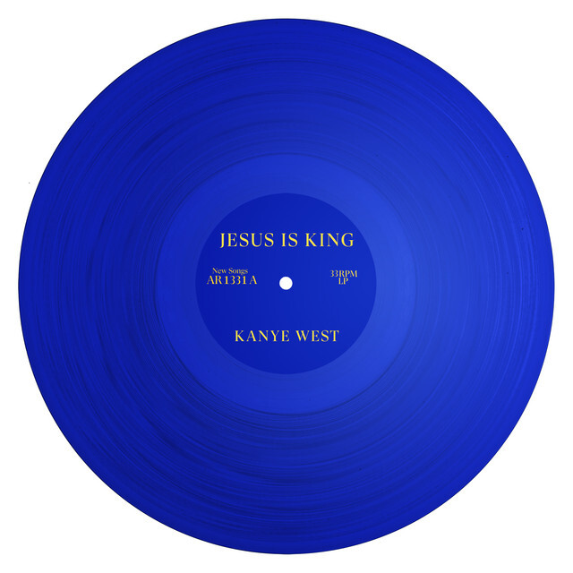

Kanye Omari West (nombre legal actual: Ye) es un uno de los artistas más importantes de la historia del rap y el hip-hop. Ha influido en innumerables intérpretes y compositores (dentro y fuera del genero musical propio) y se le considera uno de las grandes figuras de la música popular del siglo XXI.
Cuenta con una discografía de 14 albumes y participa en un total de 457 canciones
Fue ganador de 27 grammys y fue nomiado a 75
The College Dropout es su disco debut, un álbum con sabor a Grammy: mejor disco de rap y mejor tema de rap por Jesus Walks.
Es un disco donde el R&b y el hip hop se dan la mano, resultando canciones muy comerciales, pero sin llegar a repetir los patrones más tópicos de las producciones R&b contemporáneas.
Colaboran Jay-Z en Never Let Me Down, Syleena Jonson en All Falls Down, Talib Kweli, Common, Mos Def y Ludacris, entre otros.
Después del éxito de su disco debut The College Dropout, busca situarse en lo más alto del panorama musical con su segundo álbum, Late Registration.
Cuenta con una larga lista de colaboradores entre la que podemos destacar a Adam Levine de Maroon 5, a Jamie Foxx, el actor que ganor el Oscar por su interpretación de Ray Charles; Jay-Z, Game, Brandy y Nas, entre otros.
Fue lanzado el 11 de septiembre de 2007 en los Estados Unidos y en fechas cercanas a esta alrededor del mundo.
Impulsado por el éxito de «Stronger», tras su lanzamiento Graduation debutó en las primeras posiciones de numerosas listas musicales de álbumes de alrededor del mundo.
Fue un album sorpresa salido el 24 de noviembre de 2008
gran parte de la fama y el reconocimiento de este album se debe a a la innovacion en sonido, mezclas y significado; ya que sus canciones etan llenas de sentimiento tras la muerte de su madre.
Este album fue su forma de volver a la cima tras su polemica con Taylor Swift en el 2009.
Dejando atrás la frivolidad de los números, MBDTF tiene el propósito de ser un producto artístico en todos los sentidos.
Este album es muy reconocido por su gran camtidad de samples y artistas invitados. Teniendo, por ejemplo, el debut de Niki Minaj en "monster".
Fué el primer album en colaboración que hizo Kanye. Esta vez con Jay-z.
mas alla de su exito en ventas y sus colaboraciones, este fue su primer disco al que muchos ollentes llamas "decepción", ya que carece de cierta producción caracteristica de Kanye.
presentado como una secuela de 808's, Yeezus presenta el mismo estilo revolucionario. Como su precuela, este es un disco completamente personal y artistico que evita la comercialidad y se sentra en los significados y la produccion caracteristicos de Kanye.
Este disco no es el favorito de todos por su objetivo especifico. Busca una audiencia especifica, lo que logra que no todo el mundo quede satisfecho al escucharlo.
Abandonando lo electronico de Yeezus, Kanye volvió con un album armonico, clasico y recnocible. Con las recurrentes variantes en las estructuras compositivas, pero sin ese ánimo de reinventarse en cada nuevo disco.
este album esta lleno, como siempre, de colaboraciones y significados. En este album Kanye vuelve a hacerse ver no solo con su arte, sino que tambien con sus polemicas.
Este es uno de los albumes con mas significado de Kanye, además de uno de los mas cortos.
En este album, kanye vuelve a usar sus significados de forma personal, hablando de su vida y su bipolaridad.
Aunque tambien tenga canciones movidas, este album se destaca por su tranquilidad y melancolia. Cosas que no fueron un impedimento para su rotundo exito.
Esta vez acompañado de Kid Cudi, Kanye saca su segundo album colaborativo.
Alo igual que con Watch The Throne, Kids see ghosts tiene esa falta de sello personal de kanye.
Aunque este lanzamiento no deje de ser una de las obras de arte de Kanye, es notable una diferencia de calidad a comparacion del resto de albumes.
En este album Kanye deja ver nuevamente su amor por Dios, esta vez con armonias unicas y tranquilas.
Aunque este album este lleno de pensamiento, significado y calidad, no deja de ser uno de los albumes con menos canciones reconocibles del artista.
Durante esta epoca es cuando mas se comienza a notar a decacdencia mental de Kanye debido a su bipolaridad.
Donda es el album mas emotivo de Ye en significado, ya que es cuando su vida personal va en picada
Este album es una dedicatoria a su madre (Donda), es su album mas largo y variado.
Donda es de los albumes mas reconocidos del artista, aunque debido a su mala reputación, no fuie bien recibido porgran parte del publico y los medios.
Se nota la "seriedad" que Kanye le puso a este album no solo en las canciones, sinoo que tambien en la simbologia (como su portada negra).
Vultures parte 1 es uyno de los albumes mas esperados de kanye. Aunque no de los mejores.
Junto a Ty Dolla $ign, este album fue sacad a principios de este año, mas alla de su retraso de algunos meses (nada nuevo para Kanye).
es de sus albumes peor recbidos debido a su falta de innovacion, colaboraciones y esa calidad caracteristica de Kanye.
La secuela de su album anterior es la peor recibida tanto por el publico como por la critica.
Es el album mas pobre de Kanye. sin canciones destacables ni colaboraciones importantes.
Se dice que su fracaso fue debido a sus adicciones y su bipolaridad, aunque no hay forma de saberlo a ciencia cierta.
Proximamente...